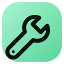
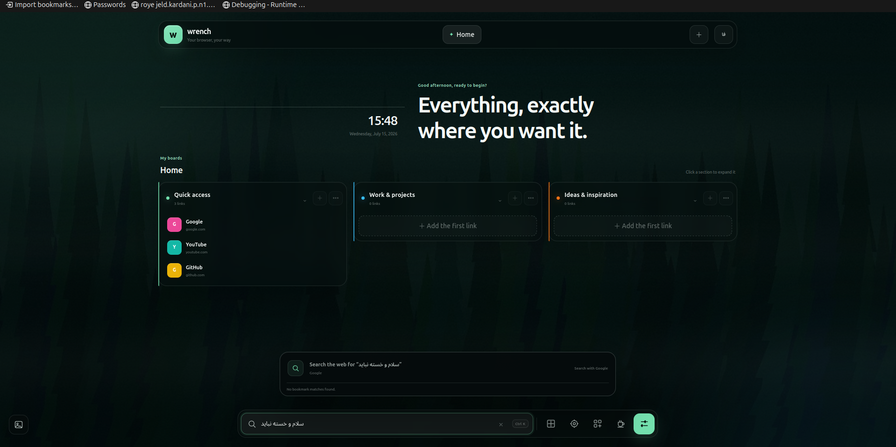

Calm organization
Pages, collapsible boards and quick bookmark access without a crowded dashboard.

Open source · local first
A quiet new-tab workspace for bookmarks, focus sessions, custom backgrounds and keyboard-first search.

Pages, collapsible boards and quick bookmark access without a crowded dashboard.
Open command search with Ctrl/Command + Shift + K and move through results with the keyboard.
No account, ads, analytics or project-operated backend.